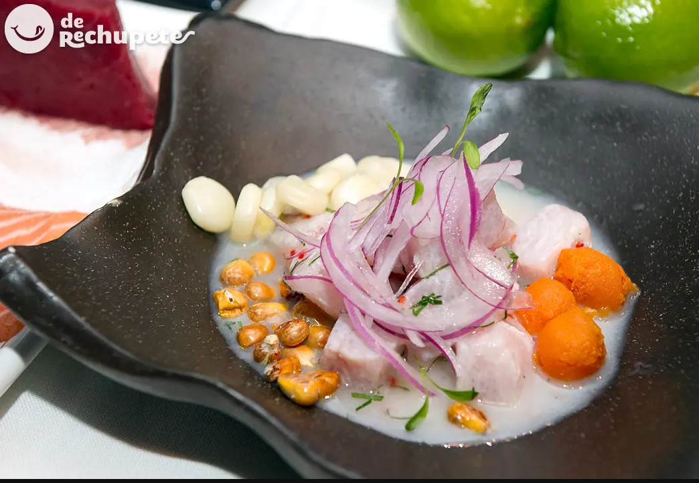

Classic Peruvian Ceviche

Ingredients:
- 1 k. of fresh white fish and broad loin. You can use corvina as in the course or other fish
- 6 limes or lemons
- 2 red onions cut into fine julienne
- 2 tablespoons finely chopped fresh cilantro
- 1 teaspoon of finely chopped rocoto or yellow pepper (seedless)
- Salt and freshly ground white pepper (to taste)
- For the garnish: choclo corn (large grain)
- 1 sweet potato
Steps:
Long story to put right now here! See this link